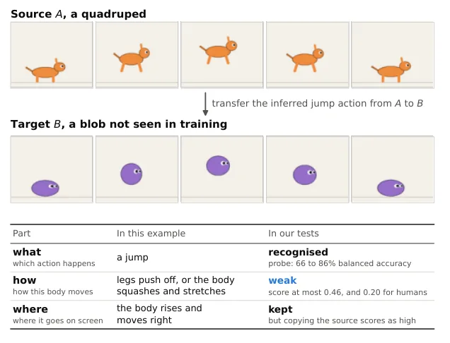
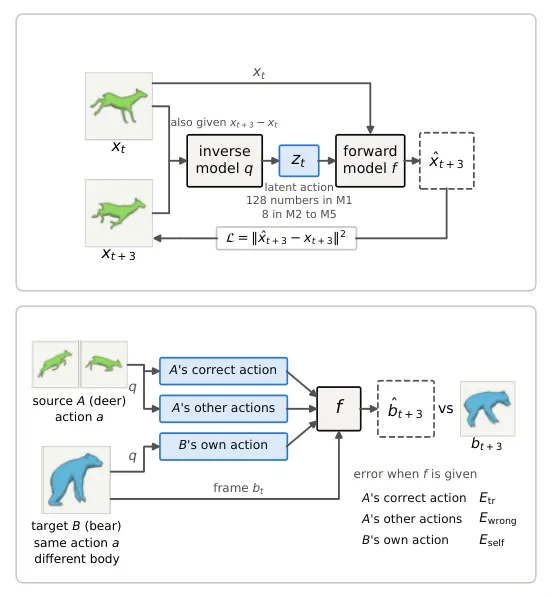
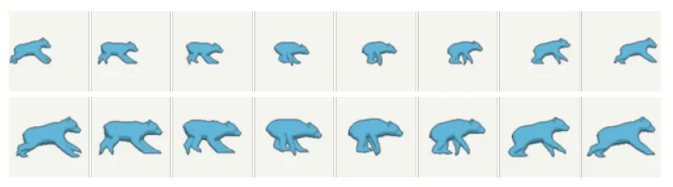
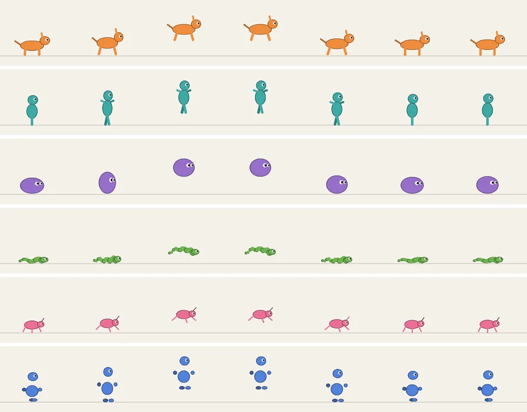
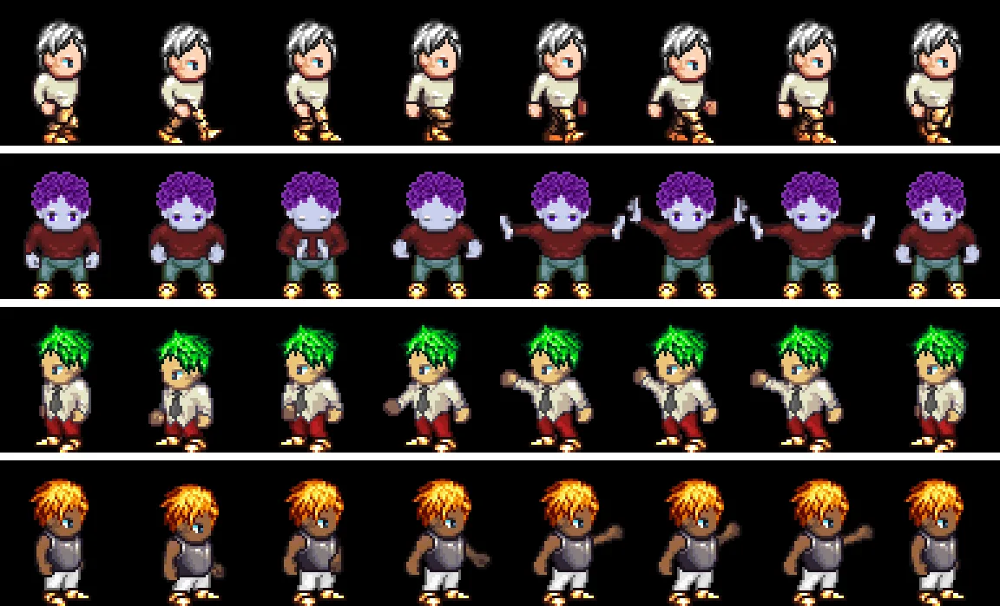
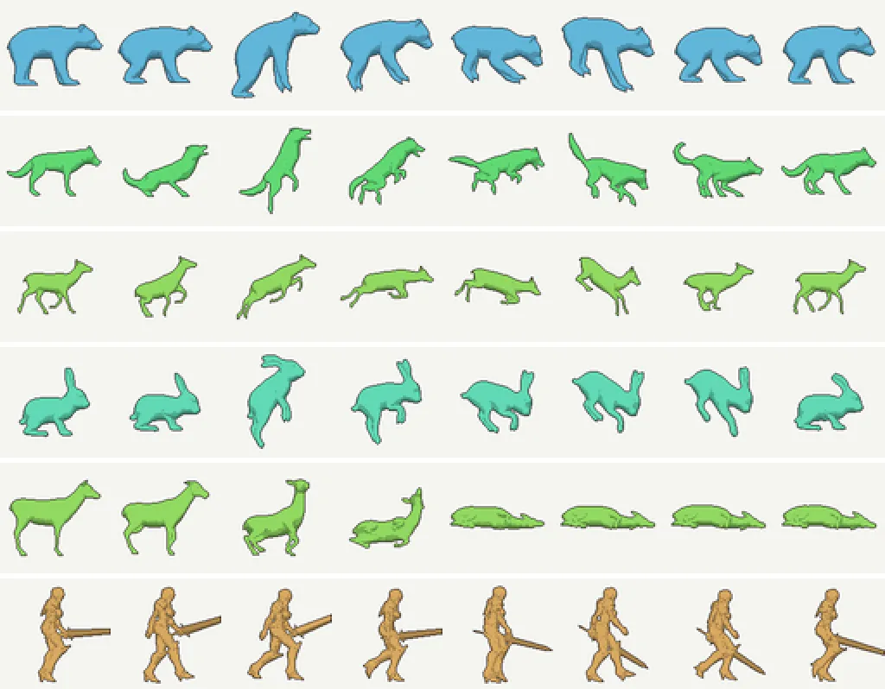

潜动作世界模型中的跨体型动作迁移：动画角色的实证研究
Action Transfer Across Character Body Plans in Latent-Action World Models: An Empirical Study of Animated Characters
核心贡献是评测口径而不是新模型：G 会奖励“忽略动作”，S 用同源错误动作做对照；再用跟随身体相机剥掉屏幕位移。结果很冷静：固定相机下复制基线 0.75/0.71，学习模型 0.72–0.74；跟随身体相机下最好 0.46（新动物家族）/0.20（人类）；动作类别仍可线性解码（66–86%），说明“知道在做什么”不等于“能让新身体做出来”。动作维度从 128 降到 8 带来 +0.23–0.24 的迁移提升，但身体泄漏与迁移的相关（r=−0.91）不构成因果。
baseline
transfer
probe
作者、单位与技术谱系 · Research context
作者与单位
研究脉络
- LAPO（Schmidt & Jiang, 2024）方法基座关系：提供“逆模型从两帧推动作、正模型用动作预测后一帧”的潜动作训练框架，本文的模型骨架与 H=3 设定沿用该路线。[原文引用/说明]
- AdaWorld并行上游关系：用连续潜动作把世界模型适配到新环境；本文采用其连续动作设定，但关注跨体型而非跨环境。[原文引用/说明]
- CLAW / Olaf-World / DiLA对照目标关系：三者分别用梯度反转、特征变化对齐、结构-外观分离限制动作信息；本文把它们简化为 M3–M5 三个可比较的目标。[原文引用/说明]
- Sprites 与 DeformingThings4D评测数据基座关系：Sprites 提供同体型换外观对照，DeformingThings4D 提供艺术家制作的动物/人类动画，用于跨体型测试。[原文引用/说明]
单作者、单一机构，未发现公开合作边；下列为方法基座与评测数据的技术依赖，不是合作关系。作者声明代码与合成基准将在发表后释放，合成数据已在 Hugging Face 以 CC BY 4.0 发布。
方法本质拆解 · What actually changed
是不是微调？
五个模型都从头训练 20 个 epoch（AdamW、weight decay 1e−4、one-cycle 峰值 1e−3、batch 128），共享同一个逆模型 + U-Net 正模型骨架；差异只在动作维度（128 vs 8）、是否加 tanh+噪声，以及是否加 CLAW/Olaf/DiLA 风格的额外损失。
加了什么约束？
M3 用梯度反转的辅助头从动作重建 16×16 未来帧，压掉动作里的未来信息；M4 用余弦损失把动作投影对齐到冻结 ResNet-18 的特征变化；M5 让动作只驱动轮廓、外观走另一条不看动作的通路。M2–M5 还把动作压到 8 维并加 0.1 噪声，限制动作容量。
推理/后端做了什么？
迁移时模型完全冻结，不做微调、不做测试时优化；把源动作按同一帧索引喂给目标帧，单次前向预测 t+3。评测额外跑线性探针与一个在真实训练片段上训练的卷积分类器，用来读动作类别，但都不参与生成。
方法本质是什么？
把“动作是什么”“身体怎么执行”“在屏幕上移到哪”拆成三个可分别测量的量：用跟随身体相机去掉屏幕位移，用正确/错误动作对照去掉“忽略动作也能得分”，再用探针检查动作里是否残留源体型。它改变的是评测与诊断，不是生成架构；没有证明存在一个真正体型无关的潜动作。
输入源角色动作 z_t 与目标角色当前帧 → 冻结的逆/正模型单次前向 → 用 S 分数与位移基线分离“动作/身体/屏幕位移” → 固定相机下复制基线 0.71–0.75，跟随身体相机下最好 0.46（动物）/0.20（人类）。

桥接价值Bridge
桥接价值
这篇对我们的直接价值是“怎么发现一个指标在奖励错误行为”。跨具身迁移里的常用增益 G=(E_copy−E_tr)/(E_copy−E_self) 有一个致命性质：如果模型完全忽略动作，则 E_tr=E_self，G=1，反而满分。作者用一个只复制源角色屏幕位移、没有任何可学参数的基线证明：在固定相机下它能拿到 0.71–0.75，和多数学习模型持平。这个结构与我们评估几何条件、风险条件或语言条件时遇到的“条件被忽略但指标很好”是同一类问题，因此 S 分数与位移基线的设计可以跨任务借用。
方法与模块Method
方法摘要
模型是 LAPO/AdaWorld 式潜动作：逆模型 q 从 t 与 t+H 两帧（H=3）推断动作 z，正模型 f 用 t 帧与 z 预测 t+H；训练只有像素重建损失，没有动作标签。迁移时固定模型，把源角色 A 的动作逐步喂给目标角色 B，与 B 自己的动作、A 的错误动作、以及“复制 H 帧前画面”三种预测比较，得到 E_self、E_tr、E_wrong、E_copy。作者提出 S=(E_wrong−E_tr)/(E_wrong−E_self)，只有 E_wrong−E_self>1e−6 才计分；同时报告 wrong-action accuracy 与 action sensitivity，防止模型对动作不敏感时分数被误读。为分离“屏幕位移”，每个动画用固定相机与跟随身体相机各渲染一次。
可迁移模块
第一，S 分数可以直接用于任何“条件输入”的生成/预测任务：把正确条件与同源错误条件对比，而不是只和“复制上一帧”比。第二，位移基线（无参数、只搬运源角色的屏幕位移）是一个极强的 sanity check，应该成为我们做跨传感器/跨平台迁移时的默认对照。第三，身体泄漏探针（用动作向量预测源体型/家族）提醒我们：条件编码越“干净”，迁移越好，但低泄漏本身不保证迁移（M4 随机编码器泄漏最低却迁移更差）。第四，固定/跟随相机两种视角，可以类比到“世界系/机体系”两种评测，避免把全局位移当成身体运动。

证据Evidence
关键证据与数字
固定相机、合成基准：复制基线 S=0.75±0.06（seen→held-out），M2/M3/M5 0.72–0.74，M4 0.86，M1 0.40；动画数据上复制基线 0.71±0.02，学习模型 0.35–0.79。跟随身体相机、合成基准：基线掉到 0.20，学习模型 0.18–0.42；动画数据最好 M4 对新动物家族 0.46±0.02，对人类 0.20±0.01，M2 为 0.31/0.12。线性探针在未见动物家族上 66–86% balanced accuracy（随机 17%），但同一批模型的迁移分数只有 0.11–0.46。动作维度控制：8 维比 128 维高 0.23（无噪声）/0.24（有噪声），且在所有家族/所有配对运行中一致；噪声本身只加 0.03–0.05。M4 相对 M2 的平均增益 0.073（15 次配对运行，家族均值区间 [0.054,0.092]）。
边界与下一步Limits & Next Step
边界与风险
作者明确承认：模型小（1.85M 参数、64×64 像素）、所有方法共享同一训练设置、M3–M5 是已发表目标的简化改编而非原系统复现，因此结论不能直接外推到大世界模型；只有 32 个带标签动物与 24 个人类；S 同时衡量逆模型与正模型，低分可能来自正模型画不好新身体；没有与骨架重定向比较；身体相机仍用像素误差，不直接测关节、接触或部件。对人类的结果还混入了比例、服装与动作来源（动捕 vs 艺术家）的差异。我们还需核验：把 S 用在机器人数据上时，“错误动作”集合如何构造才不引入偏置；时间对齐的最好位移检查给了上界，但不能作为方法。
下一步实验
第一步是在我们自己的条件预测任务上复制这个“错误条件对照”：例如跨传感器深度补全或跨平台位姿回归，固定同一输入，只把条件换成同源错误条件，看指标是否仍支持原结论。第二步把“复制基线”加入几何评测：对稀疏视角重建，复制最近帧/最近位姿的平凡解必须在同一留出集上报告。第三步用身体泄漏探针检查我们的平台编码器：如果平台/传感器身份能被轻易解码，跨平台增益可能只是记住了源域。最后，若要做真正的跨体型迁移，应先比较“动作与体型分离输入”的简单改造，而不是直接上更大模型。







